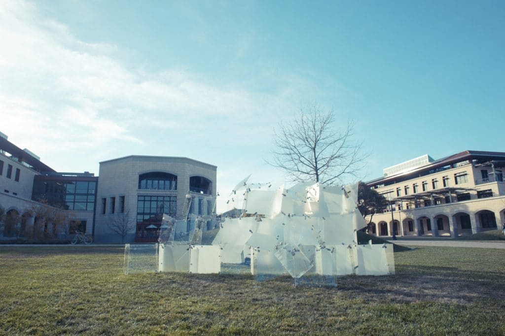
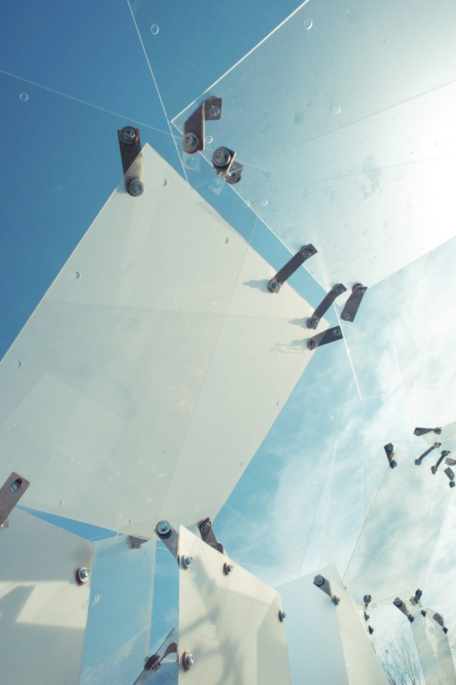
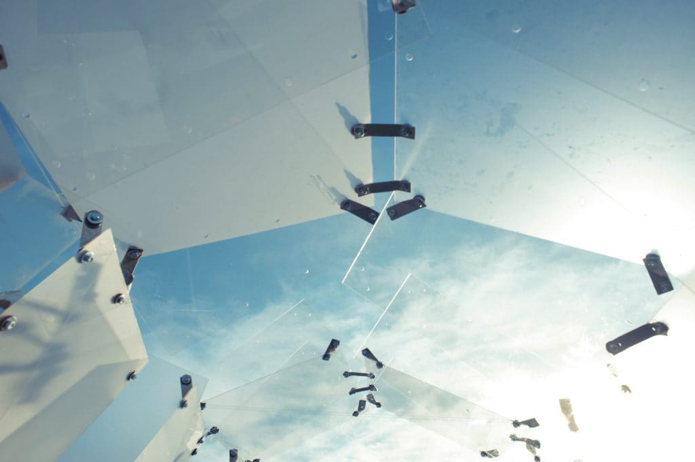
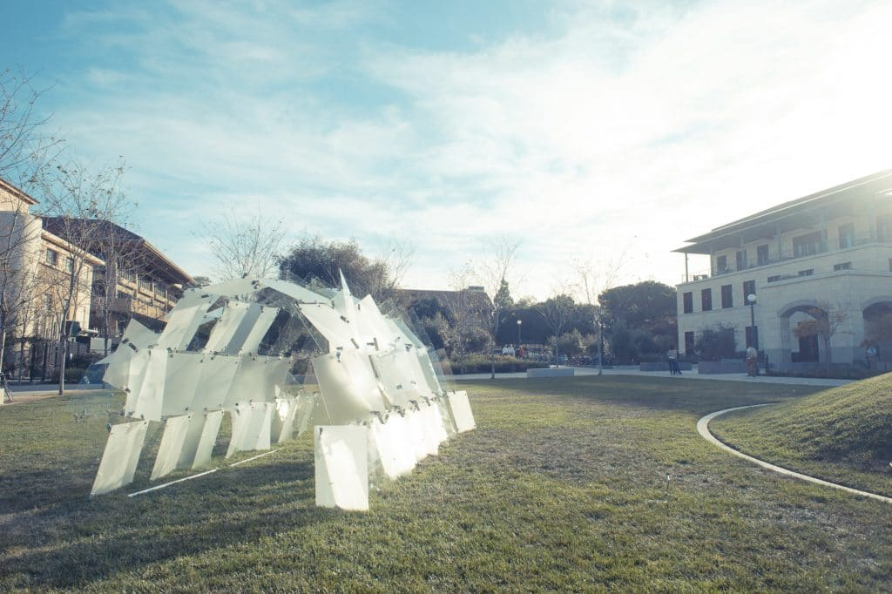
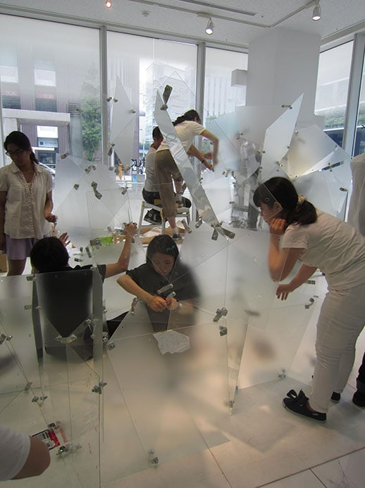
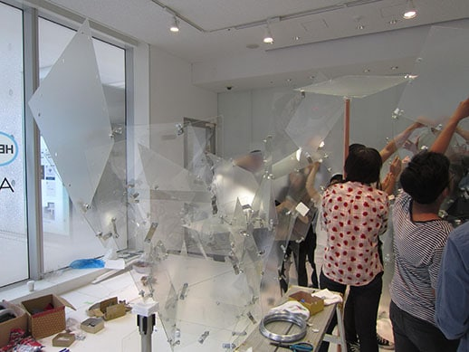
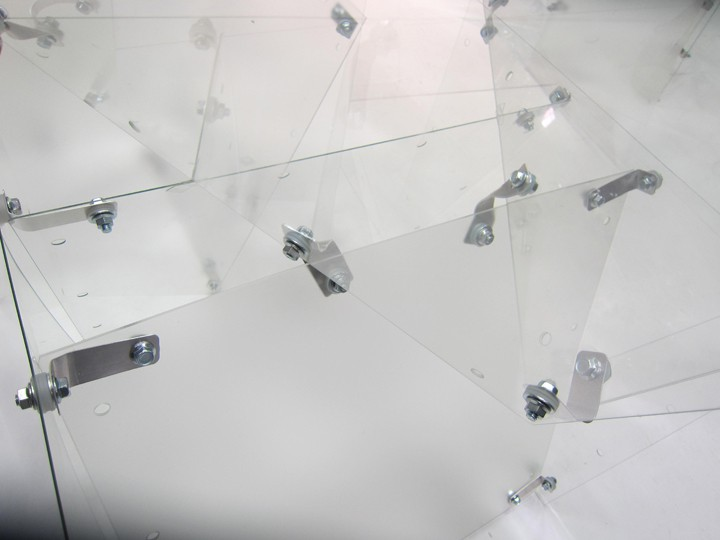
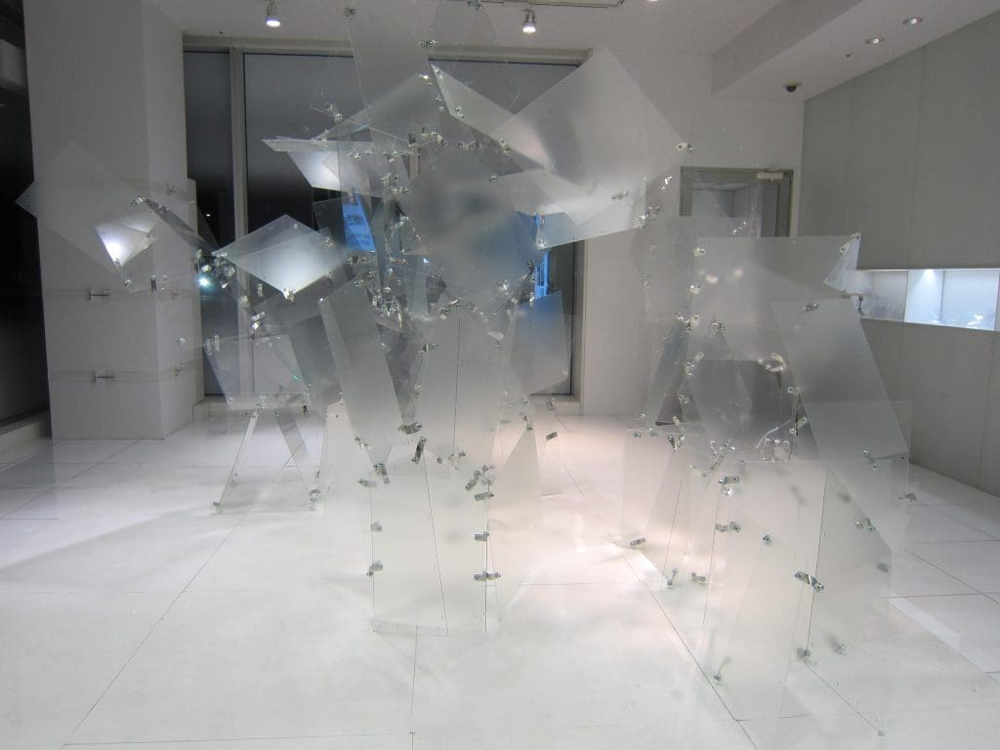
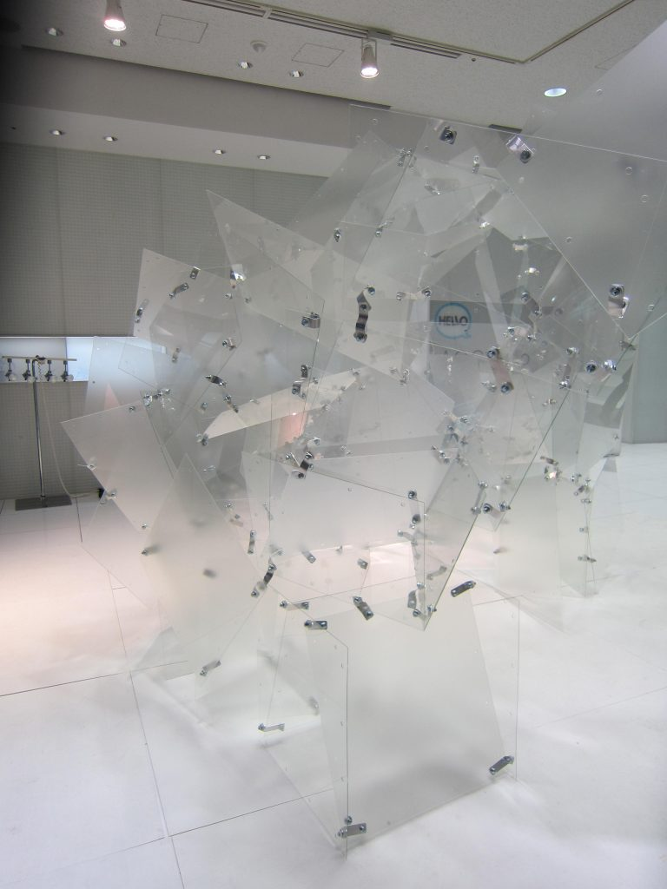

TRANSPARENT STRUCTURES I & II










Publications
ACSA Annual Conference 2016 Paper Presentation “Transparent Structures,” European Cultural Center Architecture Biennial/ Time Space Existence, Venice 2018, GAA Foundation
Press
TRANSPARENT STRUCTURES I & II
STANFORD UNIVERSITY AND TOKYO, JAPAN
Transparent Structures I: This course was co-taught in 2015 at Stanford University with structural engineering professor, Jun Sato. It focused on investigating glass, structurally and spatially. Developing a concept sketch provided by the instructors, 13 students designed and built this installation used a chemically strengthened glass. The space is shaped like a barrel vault and allowed multiple layers through which to explore the visual field. The transparencies of the glass were modulated to dissolve into the greenery of the Engineering Quad on campus.
Transparent Structures II: A continuation of “Transparent Structures I”, this installation was completed with Jun Sato Laboratory in Tokyo, Japan, with students from the University of Tokyo and Keio University. Using the same glass units used at the Stanford installation, the students developed multiple module types which mutated while forming a continuous arched pavilion. The organic structure featured seamless yet distinct structural systems, including a tower, a polygonal assembly, an arch, and a cantilevered extension. The use of two types of glass transparencies (clear and acid etched) created a complex visual field, enabling the structure to visually dematerialize from one end to the other.
© 2023 BACH ARCHITECTURE. All rights reserved. | 3752 20th Street, San Francisco, CA 94110 | (415) 425-8582 | · info@bach-architecture.com